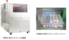

2024年
問題163 建築物内廃棄物の中間処理に関する次の記述のうち，最も不適当なものはどれか．
（1）中間処理の目的には，廃棄物の減量化がある．
（2）建築物に導入されている中間処理設備は，比較的小規模なものが多い．
（3）溶融固化装置は，厨芥の中間処理のために用いられる．
（4）段ボールの中間処理方法として，梱包がある．
（5）プラスチック類の中間処理方法として，圧縮がある．
2024年
問題163 正解（3） 頻出度AAA
「溶融固化装置」は発泡スチロールに熱を加え溶融し固化する装置である（2024-163-1図，2024-163-1表参照）．

出典 株式会社フジテックス
https://www.fjtex.co.jp/kankyo/products/foamedstyrol-compacter/56 を基に作成
2024-163-1表 建築物内の中間処理設備
| 廃棄物の種類 | 処理法 | 処理設備 |
| 段ボール，新聞，雑誌 | 梱包 | 梱包機 |
| OA紙，再生紙 | 圧縮，切断，梱包 | 圧縮機（コンパクタ），切断機（シュレッダ），梱包機 |
| 廃棄紙類 | 圧縮，梱包 | 圧縮機（コンパクタ），梱包機 |
| プラスチック | 圧縮，梱包 | 圧縮機，梱包機 |
| 発泡スチロール | 梱包，圧縮，溶融固化 | 熱溶融固化装置 |
| 缶類 | 圧縮 | 圧縮装置 |
| ちゅう芥 | 冷蔵，粉砕・脱水，発酵，乾燥 | 冷蔵庫，ちゅう芥粉砕・脱水装置，たい肥化装置，生ごみ処理装置 |
建築物内で用いられている廃棄物用の圧縮装置は，圧縮面の圧力が147～392kpaで，圧縮率は1/3～1/4のものが多い．直進プレス式コンパクタ，スクリュー式コンパクタ，コンパクタ付きコンテナなどの種類がある．
缶類の処理方法として，自動的にスチール缶とアルミ缶を分けて圧縮しブロック状にする方式がある．
破砕機は，圧縮，衝撃，せん断などのメカニズムを単独で，又は組合せて固形物を破砕する．破砕処理によってごみの体積は減少することが普通である．空きビンは約1/4に，プラスチック容器では1/3程度になる．
梱包機は紙製品などを圧縮梱包する装置で資源回収に有効である．
ちゅう芥類を処理する生ごみ処理機には，減量用の乾燥機やリサイクル用の堆肥化装置がある．